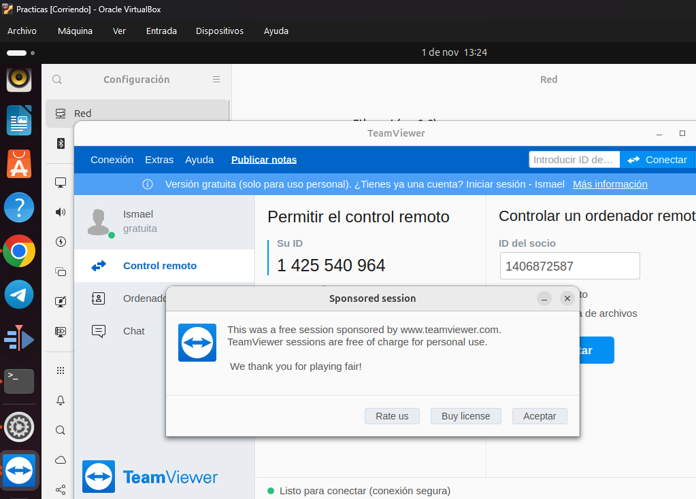

PRÁCTICA DE TERMINALES
Realizado por: Ismael Herrero de la Torre - 2º ASIR
ÍNDICE DE CONTENIDOS
- Instalar un Servidor SSH en Linux
- Conexión de Escritorio Remoto en Windows y Linux Remmina
- Instalar un Teamviewer en Equipo Windows, Linux y Android
1. INSTALAR UN SERVIDOR SSH EN LINUX
Crear usuarios que puedan acceder al equipo a través del SSH (adduser)
Lo hice en dos máquinas virtuales, servidor ubuntu (smr) y un ubuntu cliente, ambos de clase. Primero instalé el SSH server en el servidor:
Comprobé que funcionase el servicio:
Y después hice el adduser: (ismaelherrero)
Instalar el servidor SSH (Ubuntu, Knoppix)
La captura de instalación y status está en el apartado anterior.
Probar con PuTTY desde Windows
Desde Windows 11 home (máquina virtual de clase), instalé el PuTTY y lo usé para conectarme con el mismo usuario (ismaelherrero) al servidor ubuntu:
Conseguí conectarme correctamente al server:
Probar desde otro Linux con el comando SSH
Me conecté bien desde el ubuntu cliente al ubuntu server:
1.b - ¿Cómo se podría conectar un usuario sin tener que meter la contraseña cada vez que se conecta?
Investigué y hay que generar una clave hash para ello, luego compartirle la clave al servidor. De hecho es bastante rápido:
Generé la clave en Ubuntu:
Luego se lo compartí al servidor y entré sin meter contraseña:
2. CONEXIÓN DE ESCRITORIO REMOTO EN WINDOWS Y LINUX REMMINA
Levantar el servicio RDP en Windows
Conexión cliente RDP desde:
- Windows
- Linux (Remmina)
Desde mi máquina virtual Windows 11 establecí conexión con otra máquina Windows 10 Pro y habilité en ambos el escritorio remoto:
Habilitación del escritorio remoto
Permitiendo cualquier tipo de redes para evitar problemas por no ser una red segura o cualquier eventualidad:
Después inicié el escritorio remoto en Windows 11 (las máquinas configuradas con adaptador de red interna y en la misma red):
Me advirtió de que el equipo remoto podía no ser fiable y lo ignoré:
Y desde el Windows 11 se me abrió el escritorio del Windows 10:
Esta vez creé otro usuario en el Windows 10 para conectarse a él:
Y desde el ubuntu cliente configuré la conexión de Remmina para apuntar al Windows 10:

Luego me metí a la conexión:
Y este fue el resultado:
3. INSTALAR UN TEAMVIEWER EN EQUIPO WINDOWS, LINUX Y ANDROID
Objetivos
- Conectar a administración remota desde: Otro equipo Windows y desde otro Linux, desde móvil
- Conectar en modo presentación y ver las opciones disponibles: Otro equipo Windows y desde otro Linux, desde móvil
Instalación en Linux
Desde un equipo Linux descargué el archivo:
Lo instalé desde la terminal metiéndome en el directorio Descargas y ejecutando este comando:
sudo dpkg -i teamviewer_15.71.4_amd64.deb
Y tras la instalación lo activé:
Instalación en Windows
Decidí instalar TeamViewer desde Windows 10 para conectarlo al Linux:
Después el procedimiento fue el mismo, me dio un número ID del equipo y una contraseña.
Conexión desde Linux a Windows
Primero me conecté desde el Linux al Windows 10:
A la izquierda se ve la máquina virtual Windows abierta y a la derecha la máquina virtual Linux con la conexión remota establecida con la de Windows:
Conexión desde Windows a Linux
Después repetí el proceso pero a la inversa, metí el ID y contraseña del teamviewer de linux en la de Windows, pero como no funcinó, tuve que añadir la máquina a la lista de confianza y desde ahí hacer la conexión:
Conexión remota a Linux (izquierda máquina Windows, derecha máquina Linux):
Conexión desde móvil
Después me conecté al W10 desde mi móvil (Android) en el que instalé la aplicación de TeamViewer. Primero me descargué la app:
Tras descargarla la abrí e inicié sesión con mi cuenta de TeamViewer (como hice anteriormente tanto en el Windows como en el Linux). Ya me salen los 2 dispositivos de confianza que metí previamente, el Windows y el Linux: